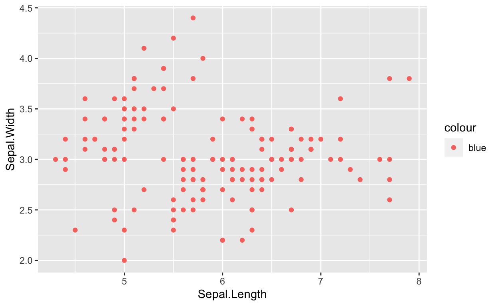
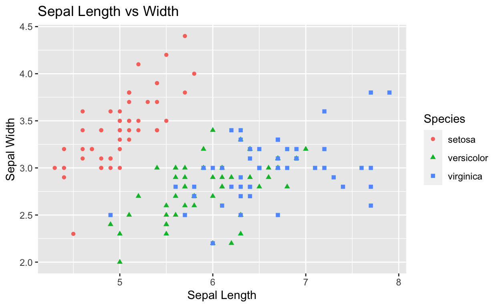

Introduction
This is a demonstrative interactive tutorial to showcase interactive exercises and shiny plots in R. Compare it to the source code that made it. This tutorial is meant as supplementary material for course “Solving business problems with R”. You can check out the main page with extra material for the course here.
In this demonstration, I will be showcasing:
- some of the possibilities of interactive plots with benefits for learning
- a clear and concise reminder of a topic within data visualisation
- interactive exercises in said topic with hints
Disclaimer: This application is meant as a proof of concept and is not production ready. It has not been properly load tested for traffic or UI tested. Any feedback about errors or long waiting times that arise can be mailed to me at this address and is greatly appreciated.
Prerequisites
To aid us in the demonstration I will use the iris dataset which the students taking this course will be familiar with. iris is a data set built-in to R. This data frame comes from Edgar Anderson’s 1935 paper and contains 150 flowers with their sepal and petal lengths and widths as well as species. Find out more by typing ?iris into your R console.
We will also use the ggplot2 package to visualize the data. The next page will include an interactive plot using shiny that will let you explore the dataset prior to exercises.
If you are ready to begin, click on!
Shiny
Here, we will examine the iris dataset interactively using a shiny application. In visualising continuous data we often turn to inquiring about its distribution. The most popular tool for such inquiry is a histogram. However, as we shall see, the width of the histogram’s “bins” has a significant impact on the appeareance of the graph. Not only that, a histogram with too few or too many bins can be misleading. To illustrate said points, choose a variable from the dropdown menu and the number of bins and see how the histogram changes.
You might have already noticed some patterns in how the data is distributed. Recall that the dataset has another variable, which is purposefully not included in the dropdown. It is the categorical variable “Species” which has three levels. Using an interactive histogram we can investigate whether there are some clear distinctions in the continuous values that flowers of certain species take. One way to achieve that visually is to add a layer of colour onto the histogram. Let’s try below, you can still manipulate the bins and variables above. As an extra, I added some extra features to make the plot more readable, try hovering over it and using the functions in top-right corner.
Finally, for extra transparency, you can delve into the data in a user-friendly table. It’s useful if you’re looking for a specific observation or just want to give it a quick glance to confirm that the plots are showing the right information.
ggplot2 - a quick reminder
You probably remember all about ggplot from the extra materials doc and classes. However, just in case you wanted to brush up on it before doing the exercises, let’s walk through a couple basic concepts. The most basic structure of a plot will be given by
ggplot(data = <DATA>) +
<GEOM_FUNCTION>(mapping = aes(<MAPPINGS>))Whenever we make ggplots we go through adding layers of graphical informaiton onto the plot. Therefore, a typical ggplot structure includes the main function ggplot() and extra graphics like geom_point() which would result in a scatterplot. The shiny plots that let you explore the distributions of variables in the previous section were based on a static ggplot which went something like this (I substracted the interactive elements so now I am calling a static histogram of Sepal.Length with 10 bins and a theme I like theme_bw())
ggplot(iris, aes(x=Sepal.Length))+geom_histogram(bins = 10)+xlab('Sepal.Length')+theme_bw()Run the code or play around with it in the console above, if the ggplot syntax and vocabulary has already come back to you. Look into the code in the next console. Can you guess what the output will be, before running it? Describe the differences between the plot below and the one we made above.
density <- ggplot(data=iris, aes(x=Sepal.Width))
density + geom_histogram(bins = 10, aes(y=..density..)) +
geom_density(stat="density", alpha=I(0.2), fill="blue") +
xlab("Sepal Width") + ylab("Density") + ggtitle("Histogram & Density Curve") + theme_bw()For extra ggplot help, look in the cheatsheet below. If that doesn’t help, consult extra material, the book or the Internet.

Exercises
In this portion you will be presented with some exercises which will let you test your understanding of the subject. Some exercises adapted from R for Data Science.
Exercise 1:
Exercise 2:
What’s wrong with this plot? Why are the points not blue and the legend is showing?

You probably already have some ideas, so try to fix it below. It may seem like an exercise in futility, but being precise and knowing where arguments belong is an important skill! Play around in the console running the code until you get the correct output. There is a hint if you’re stuck :)
#ggplot(data = iris) +
# geom_point(mapping = aes(x = Sepal.Length, y = Sepal.Width, colour = "blue"))ggplot(data = iris) +
geom_point(mapping = aes(x = Sepal.Length, y = Sepal.Width), colour = "blue")Hint: Try putting the argument ‘colour’ inside a different function than aes().
Exercise 3:
In the previous exercise you were faced with an incorrect plot and challenged to fix it, now look at the plot below and try to recreate it exactly!

# first create a ggplot element, with the appropriate data and aes() mappings.
# you can either solve it in 4 lines or pass each step to a variable adding subsequent layers :)
# then add the appropriate geom
# pass the same categorical variable to aes() in two graphically distinctive ways
# lastly add the titles of the x and y axes as well as the title
# voila!ggplot(data=iris, aes(x = Sepal.Length, y = Sepal.Width)) +
geom_point(aes(color=Species, shape=Species)) +
xlab("Sepal Length") + ylab("Sepal Width") +
ggtitle("Sepal Length vs Width")